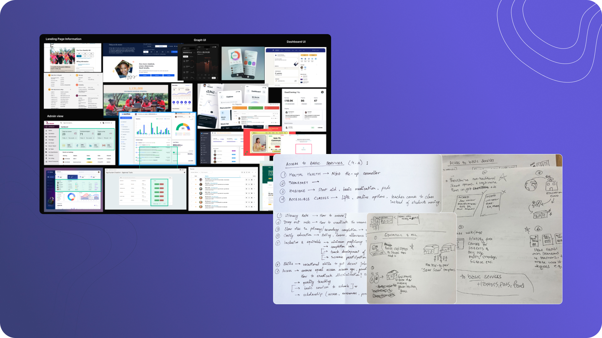
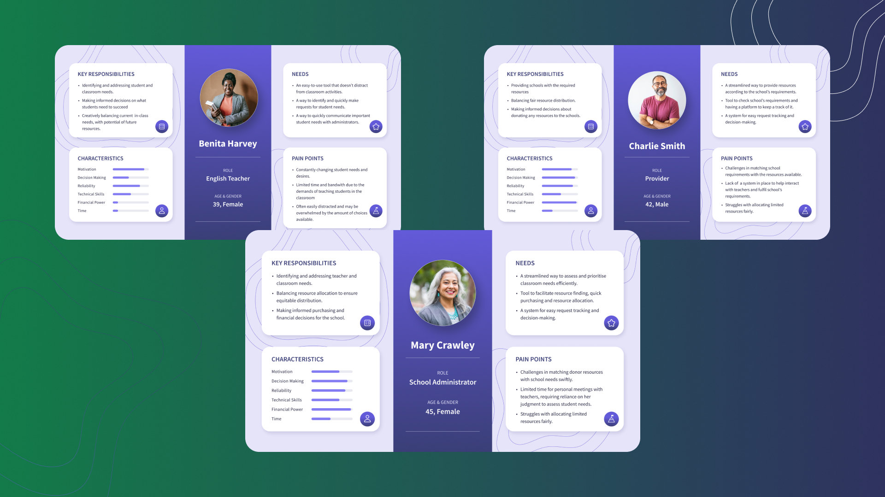
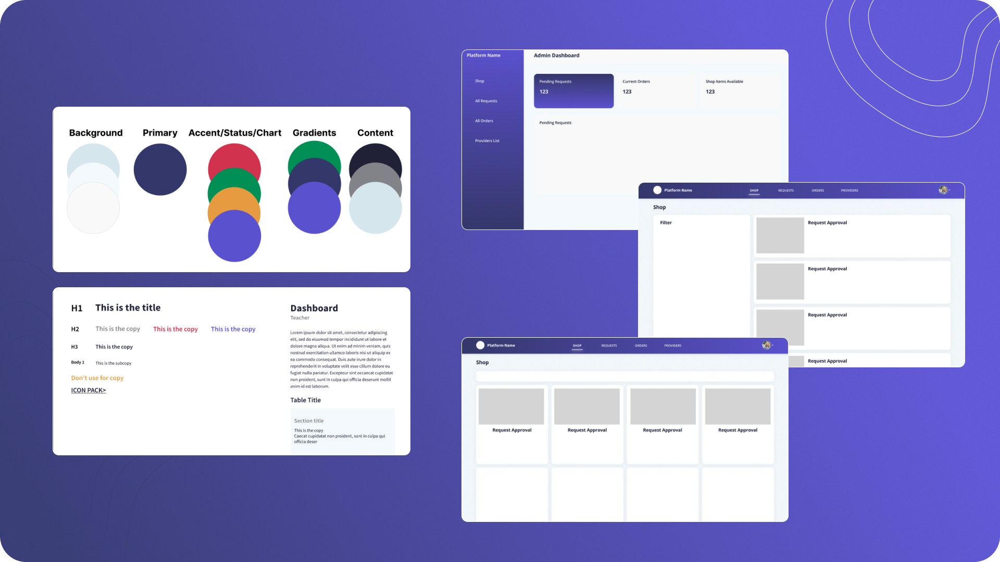
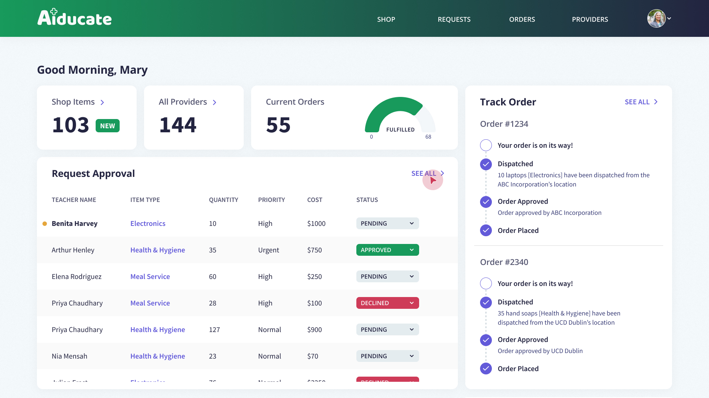
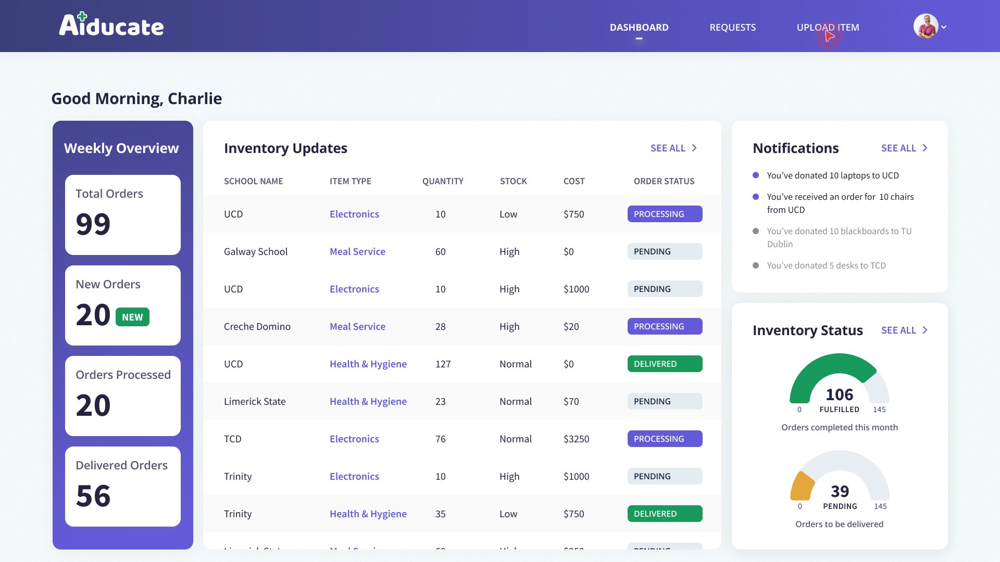
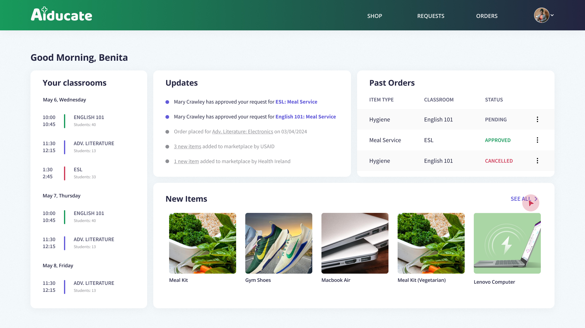
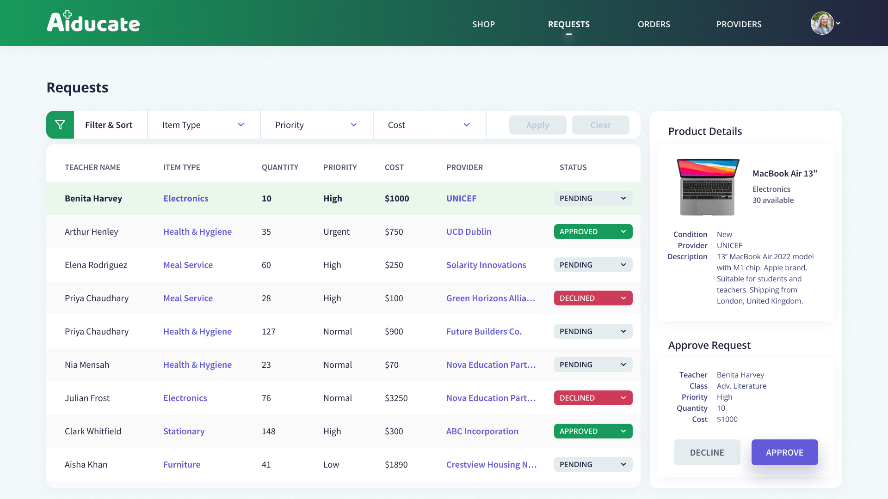
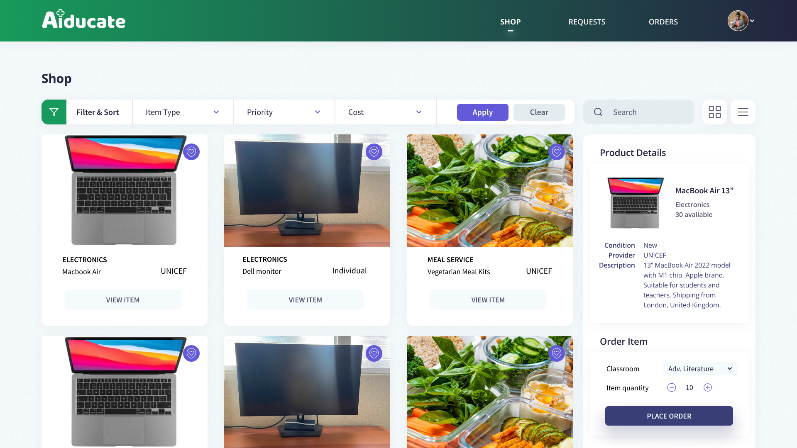

EdTech · Social Impact · 2024
Connecting underprivileged schools with donors through transparent, trustworthy donation workflows.
Overview
Our goal was to create a platform that streamlines how schools request and distribute resources, builds trust through transparent donation tracking, and supports educators who are often overwhelmed with administrative work.
Goal: Design an experience that felt clear, dependable, and empowering to every user involved.
The Problem
Teachers wanted to request help but lacked time and simple tools. Administrators couldn't track resources or prioritize needs effectively. Donors wanted to contribute but needed visibility into how their support was used.
Basically: everyone wanted to help, but the existing systems made it feel like filling out tax forms. By hand. In triplicate.
Process
We found that people don't drop off because they don't care — they drop off when they're uncertain.
Key insight: Trust increases when users can instantly answer — "What's happening now?", "What's next?", "Where did my contribution go?"

Design approach: competitive analysis of existing platforms alongside early concept sketches mapping access to basic educational services.
I created personas for teachers, admins, and donors — then mapped their journeys to identify emotional touchpoints. Teachers feel relief when resource access is simple. Admins feel confident when allocation is visible. Donors feel connected when they see impact.

Three distinct user personas — Benita (Teacher), Mary (Administrator), and Charlie (Provider) — each with unique responsibilities, pain points, and needs that shaped the role-based design.
I designed three role-based dashboards and iterated to reduce steps, improve hierarchy, and make status unmissable. Teachers request in 3 steps, donors give in 2.
Design Decisions
Role-specific Dashboards
Each user sees only what they need, reducing cognitive load and decision paralysis.
Transparent Status Tracking
Real-time visibility builds trust and encourages continued support from donors.
Minimal Steps to Act
Teachers request in 3 steps, donors give in 2 — nobody has time for a 12-step checkout when kids need books.
Lightweight Design System
Reusable components keep consistency across all three user types without creative overhead.

Design system foundations — colour tokens, typography scale, and mid-fi wireframes establishing consistent patterns across all three dashboards.
Final Interface
Aiducate includes role-specific dashboards tailored to what each user needs most — Teachers request resources and track approvals, Admins manage incoming requests, Donors contribute and follow their impact in real time.

Teacher dashboard — classroom overview, real-time approval updates, past orders, and new marketplace items in one glanceable view.

Provider (donor) dashboard — weekly inventory overview, order tracking, and fulfilment metrics giving donors full visibility into their impact.

Shop view — teachers browse, filter by item type, priority, or cost, and place orders in just a few steps.

Admin requests view — full visibility into all incoming requests with priority, cost, provider, and one-click approve or decline.

Admin dashboard — transparent order tracking with live status updates, giving administrators confidence in every allocation decision.
Outcome
The result: Good intentions actually became tangible learning opportunities — instead of getting lost in bureaucratic purgatory.
What I Learned
This project reinforced the importance of designing for clarity and trust in resource-limited environments. Small usability decisions — a clearer label, a simpler step, a more visible status — significantly improve adoption and confidence.
More importantly, Aiducate reminded me that design can enable dignity and equal opportunity, especially where resources are uneven.
Next Steps